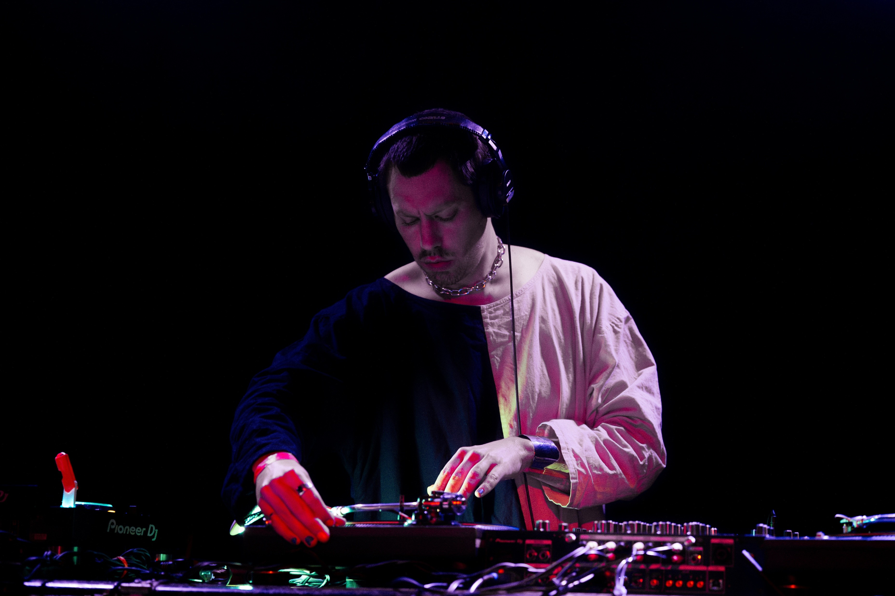

work samples:
Club Demo
Chicago
Sep 24 2025
Live at Sleeping Village
Chicago
Jan 5 2026
Live at CIVL Fest
Chicago
April 18 2026
Lake of Fire Blues
Salt Lake City, May 31 2024
Live at The Native
Chicago
April 8 2026
Disko Sleaze II: Stito’s Revenge
Salt Lake City, Sep 27 2024
Harlequin
Live at the International Artist Lounge
Salt Lake City, Feb 02 2024
Live at Simons
Chicago, June 09 2025
Lawn Brutic (Stephen Anderson) is a dj and minimalist producer. Dance is the imperative. We’re here to cut rug. Heavy-hitting techno, house, and club sounds x tape-based classical and experimental texture for a cinematic dancefloor experience.
An easy way to support my work is to follow me on Resident Advisor.
Bookings: lawnbrutic@gmail.com
Banner photo by Colin Gahungu
featured track